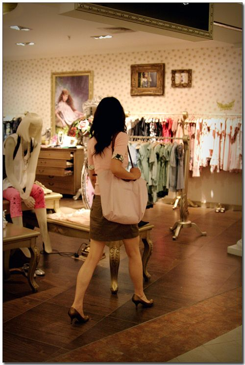

L.O.S.T. @ Jun 07, 2009
信心十足的去拍霓虹闪烁，可是很难！
既没有激情也没有热情，更没有灵感，所有照片上的颗粒都比较明显......
灰心之下拍照最终变成了促膝长谈，内容是：LOST......

整个辛勤劳作后最喜欢的一张照片，Sherry称之为“火焰山”。

为什么总是选在水游城练习拍照呢？其实我很不喜欢去人多的地方。
大概这家集休闲、娱乐与购物一体的商场正好在我们两家的中间位置，除了购物闲逛的人也不少，其中也偶见一两个摄影党穿梭其中。
在Sherry的促进下我也开始捧起摄影书籍学习了，好多年只是拿着相机随便拍，没有真正投入到严肃的学习中，那么进步也是显而易见的少之又少。

MUJI？恩~
里面的衣服可以说是最时髦的，因为它们很环保；
也可以说是劳保用品，因为它们技术含量很低。

颗粒.....颗粒......让人灰心的颗粒.....
最近在看大师们的摄影作品，越看越了解自己对于摄影的寡薄。

各穿了热裤和超.....短裙的女士，匆忙从我的镜头前闪过。
很摩登很摩登，在人群中一眼就能看到。
我甚至觉得她们更象是要参加某个PARTY而打扮的装束。

***********************C.H.A.N.G.E.***********************
又剪短了，80年代阿姨头。
用她的话讲一个小女人变成一个男人婆？！
还需要女人味做什么？还是剪了的好。

8 Responses to “L.O.S.T.”
2009-06-07
sherry的大包包里也藏着相机吗？两个人一起拍可能更有感觉呢。追梦的过程不一定有趣的，呵呵～～
2009-06-07
很喜欢黑白的相片。sherry背了法国国民包longchamp？
2009-06-07
她没带相机，她那包包还要1000多人民币，性价比不高哎，不过粉色的是很好看~
2009-06-08
like your new cut. look very feminine.
2009-06-08
茶很喜欢水游城，我喜欢冬天时，窝在水游城那取暖灯下，感觉特别好
2009-06-08
下次拍照提前通知我。。ok?
2009-06-09
喜欢短发的干净利落，也喜欢长发的女人味。
2009-06-13
拍霓虹灯必须要用脚架。用低ISO。才会没有噪点也不会拍糊
Leave A Reply
存档只读，评论已关闭。